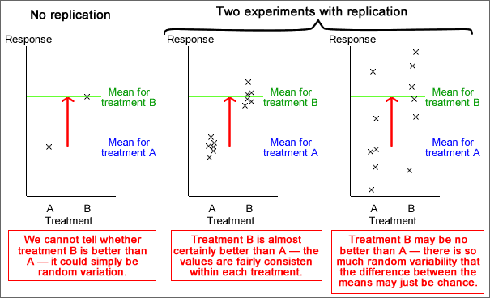
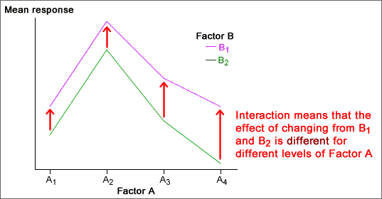

If you don't want to print now,
Reason for conducting an experiment
An experiment looks for a causal relationship between a response and one or more explanatory variables.
Experimental units
Experiments are generally conducted on a set of experimental units. Depending on the type of experiment, these units could be people, animals, trees, areas in a field, shops in a retail chain, ...
In the experiments that we will examine here, a single response measurement is made from each experimental unit.
Factors and treatments
The researcher has control over some aspect of each unit. These controlled characteristics are explanatory variables and are called factors in the context of an experiment. The different values of the controlled characteristics are called experimental treatments.
Experimental design
The decision about which treatment is applied to each experimental unit is called the experimental design.
Differences between experimental units
In practice, it is usually impossible to conduct experiments with experimental units that are identical. The experimental units usually have characteristics that vary from unit to unit.
These differences between the experimental units result in variability in the response measurements that are made from them, even if all receive the same treatment.
Bad experimental design
If the treatments are allocated to experimental units in a way that is associated with their naturally varying characteristics, the apparent relationship between the treatments and the response can be distorted.
This is similar to the effect of lurking variables in observational studies.

Good experimental design can avoid the potential effect of lurking variables.
Confounding
The design of an experiment may make it impossible to disentangle the effects of the treatment and other characteristics of the experimental uits. If the treatment is perfectly correlated with another variable, the effects of the two variables cannot be distinguished. The treatment and variable are then said to be confounded.
It is particularly important to avoid confounding in an experiment.
In an experiment, treatment A was applied to 10 experimental units in 2010 and treatment B was used on 10 similar units in 2011.

It is impossible to tell whether the higher mean response for treatment A than treatment B was caused by the different treatments or other differences between the two years.
Avoiding lurking variables
An important goal of experimental design is to minimise association between allocation of the treatments and characteristics of the experimental units.
If the varying characteristics of the experimental units are understood and measured before the experiment is conducted, treatments can be allocated to ensure that there is no association. (See the later page about blocking in experiments.)
Randomisation
When the differing characteristics of the experimental units are unmeasured, association between them and the treatments can be minimised by randomly allocating treatments to the experimental units. This is called randomisation of the treatments and the experimental design is called a completely randomised design.
Randomisation does not guarantee that there will be no association between the treatments and characteristics of the experimental units — by chance, there may be some association. However...
Randomisation means that is unlikely that such lurking variables will affect the conclusions.
Mechanics of randomisation
The simplest way to randomise allocation of treatments to the experimental units is:
Finding the random permutation is fairly easy in a spreadsheet such as Microsoft Excel:
This gives a random permutation of the numbers 1 to n.

Causes of variation
In a completely randomised experiment,
Distinguishing the treatment effect and random variation
To find the effect of the treatments on the response, it is essentionl that we can distinguish it from random variation.
There must be enough data to estimate random variation separately from variation caused by the treatments.
Replication involves repeat measurements for each treatment. The variation within each treatment is all random variation.
Understanding the amount of random variation is necessary before you can interpret the effect of the treatments.

Known differences between the experimental units
When nothing is known about the differences between the experimental units before the experiment is conducted, we can do no better than to randomise allocation of treatments to the units.
This design can be improved when more is known about the differences between the experimental units.
Randomised block designs
Ideally all experimental units are virtually identical (minimum random variation) but in practice they are often highly variable. A better design groups similar experimental units into blocks.
In a randomised block design, a separate experiment is conducted within each block with treatments randomly allocated to its experimental units. Although all data are analysed together, the lower random variation within each block means that differences between the treatments can be more accurately estimated.
Simple block design
Although it is not essential,
If possible, researchers usually try to define blocks that have the same size and use each treatment the same number of times within each block.
With equal replicates for all treatments in every block, each treatment mean uses the same number of values in each block, so comparisons between treatment means are not affected by differences between the blocks.
| Block 1 | Block 2 | Block 3 | Block 4 | Mean | |||||
|---|---|---|---|---|---|---|---|---|---|
| Treatment A |
|
|
|
|
2.608 | ||||
| Treatment B |
|
|
|
|
2.116 |
In the example above, the experimental units were grouped into blocks of six, with each treatment randomly allocated to three within each block. Even though the response values are much higher in Block 1, this affects both treatment means equally, so the difference between them is unaffected.
Comparison of completely randomised and randomised block designs
Grouping experimental units into blocks of similar units and using a randomised block design gives more accurate estimates of the treatment effects than a completely randomised design that ignores the blocks.
Variability of experimental units
Variability between experimental units increases the variability in resulting response measurements and this 'noise' in the data makes it harder to detect differences cause by the experimental treatments.
In an experiment, we therefore try to use experimental units that are as similar as possible.
Unavoidable variation in experimental units
Identical experimental units result in the most accurate estimates of the effect of a factor. In practice however, we usually have little choice and the available experimental units are often very variable.
If we have no prior knowledge of the experimental units, a completely randomised experiment is the best possible design.
Matched pairs
Knowing something about the characteristics of the experimental units allows us to do better.
A simple example arises when there are two treatments. A matched pairs design groups the experimental units into pairs that are similar (using either numerical measurements about the units or a subjective judgement). The two treatments are randomly allocated within each pair.
Importance of randomisation
The most important aspect of a paired experimental design is that:
The two factor levels should be allocated at random to the two experimental units in each pair.
If the factor levels are allocated in a subjective way within each pair, it is possible for the treatment allocation to be associated with some lurking variable that will bias the results.
Matched groups to compare 3 or more factor levels
The idea of using matched pairs of experimental units to give more accurate comparisons of two factor levels can be generalised to experiments with 3 or more factor levels.
The experimental units can be grouped into collections of similar units whose size equals the number of factor levels. The different factor levels are randomly allocated to the units within each such matched group.
Again, this type of experiment results in more accurate estimates of the differences between the factor levels than a completely randomised experiment.
Blocks of similar experimental units
Experiments with matched pairs or matched groups are special kinds of randomised block experiments. In them, a collection of experimental units is grouped based on similar weights, ages, etc. In other situations, the experimental units naturally separate into groups.
If the number of experimental units in each block is a multiple of the number of factor levels in the experiment, it is possible to randomly allocate each factor level the same number of times within each block. The resulting experiment is called a randomised block design.
Separate experiments to assess the effects of two factors
The simplest way to study the effects of two factors on a response is with two separate completely randomised experiments. In each of these experiments, one factor is kept constant and the other factor is varied. However...
Assessing each factor in a separate experiment is inefficient.
Adding a second factor to a 1-factor design
The table below shows data that may have arisen from a completely randomised experiment with one 3-level factor.
| Factor X | ||
|---|---|---|
| X = A | X = B | X = C |
| xA1 xA2 xA3 xA4 xA5 xA6 |
xB1 xB2 xB3 xB4 xB5 xB6 |
xC1 xC2 xC3 xC4 xC5 xC6 |
The table below describes results from an experiment that also varies a second factor, Y. In it, there are 3 replicates for each combination of the levels of factors X and Y. This experiment uses the same number of experimental units as the earlier experiment.
| Factor X | |||
|---|---|---|---|
| Factor Y | X = A | X = B | X = C |
| Y = S | xAS1 xAS2 xAS3 |
xBS1 xBS2 xBS3 |
xCS1 xCS2 xCS3 |
| Y = T | xAT1 xAT2 xAT3 |
xBT1 xBT2 xBT3 |
xCT1 xCT2 xCT3 |
Although it is not intuitively obvious, the effect of changing the levels of factor X is estimated equally accurately in both experiments.
A second factor, Y, can be added by using a factorial design without reducing the accuracy of estimating the effect of X.
In the factorial experiment however, we can also estimate the effect of changing factor Y, so the factorial design provides a 'free' estimate of the effect of Y.
In a complete factorial experiment, the effect of each factor can be estimated as accurately as in a completely randomised experiment with the same number of experimental units.
Factorial design
An efficient design for experiments with two or more factors uses each possible combination of factor levels (called treatments) in the same number of experimental units. The repeat measurements for each treatment are called replicates and the design is called a factorial design.
The design on the previous page was an example of a factorial design for two factors but similar designs are also used for three or more factors.
| Factor C | |||||
|---|---|---|---|---|---|
| C1 | C2 | ||||
| Factor B | Factor B | ||||
| Factor A | B1 | B2 | B1 | B2 | |
| A1 | 527 561 |
456 377 |
475 466 |
296 325 |
|
| A2 | 621 664 |
426 476 |
561 540 |
301 235 |
|
| A3 | 724 743 |
460 426 |
626 682 |
322 304 |
|
Model without interaction between the factors
The simplest model for the effect of two factors on a response is an additive one of the form:
(mean response) = (base value) + (effect of factor A) + (effect of factor B )
One implication of this model is that the effect on the response of changing the level of factor A is the same, whatever the level of factor B. In a similar way, the model assumes that the effect of changing factor B is the same whatever the level of factor A.

If this model holds, the effects of the two factors can be separately described in a table of means.
| Factor B | ||
|---|---|---|
| Level B1 | Level B2 | |
| Mean response | 87.25 | 70.25 |
| Factor A | ||||
|---|---|---|---|---|
| Level A1 | Level A2 | Level A3 | Level A4 | |
| Mean response | 66.5 |
120.0 |
79.0 |
49.4 |
It should be noted that this model does not always hold. Interaction between the effects of A and B occurs if the effect of changing B is different for different levels of A (and vice versa).
Interaction
If the effect of changing one factor is different for different levels of the other factor, there is said to be an interaction between the effects of the two factors.

An important reason for using a factorial experimental design is that it allows you to detect interaction.
Summarising the results of experiments is usually easier if there is no interaction between the factors. However if interaction exists, it is important that it is discovered and described.
Hay fever relief
A study was conducted to investigate the effect of a drug compound in providing relief for hay fever. In the experiment, two active ingredients (A and B) were each varied at 3 levels in a factorial design with 4 replicates. There were 36 hay fever sufferers available and they were randomly allocated to the 9 treatment combinations. The table below shows the hours of relief that the subjects reported.
| Ingredient A | |||||||||
|---|---|---|---|---|---|---|---|---|---|
| Ingredient B | Low | Medium | High | ||||||
| Low |
|
|
|
||||||
| Medium |
|
|
|
||||||
| High |
|
|
|
||||||
The diagram below shows the data and the means hours of relief for the different treatments. Since the lines are not parallel, there seems to be interaction between the effects of the ingredients.

Simple model for three factors
The simplest model for data from a factorial experiment assumes that there is no interaction between the effects of any of the factors — each acts additively on the response. For an experiment with 3 factors, this implies that...
(mean response) = (base value) + (effect of factor A) + (effect of factor B )
+ (effect of factor C)
This model can be illustrated in a 3-dimensional examination. All lines are parallel if there is no interaction.

Randomisation
As in all other experiments, it is important to remember that the treatments (factor combinations) should be randomly allocated to the experimental units — randomisation of the experiment.
Interaction
It must be stressed again that the no-interaction model does not always fit factorial data. Sometimes the effect of one factor is different for different levels of the others. Interactions in models with 3 or more factors are however difficult to understand, so we only briefly mention their existence here.
Shrimp culture
Scientists conducted a factorial experiment to assess how shrimp growth was affected by temperature, salinity and the density of shrimps in the tanks. The table below shows the average 4-week gain in weight per shrimp (mg) from the post-larval stage for each combination of factor levels.
| 80 shrimps/litre | 160 shrimps/litre | ||||
|---|---|---|---|---|---|
| Salinity | 25°C | 35°C | 25°C | 35°C | |
| 10% | 73 | 349 | 86 | 364 | |
| 25% | 482 | 330 | 208 | 316 | |
| 40% | 397 | 205 | 243 | 281 | |

What is the purpose of the experiment?
Before conducting an experiment it is important to clearly state its objectives. In defining the goals of the experiment, it is important that people with intimate knowledge of the process or subject area are included in the team which is charged with designing and running the experiment.
Quite frequently,...
A clear statement of the problem can lead to process improvement without any experimentation, simply through creating a greater understanding of the process.
What experimental units should be used?
It is desirable for experimental units to be as similar as possible, so every attempt should be made to make the experimental units homogeneous.
Often however, the experimenter has little influence on the choice of experimental units and must contend with whatever variability exists. Grouping them into block of similar units (and using a randomised block design) will make the results more accurate.
What response variable should be recorded?
In an experiment, there is sometimes a single obvious response measurement from an experimental unit, but often there are several variables which can be considered as response measurements.
A subject expert would need to decide on which was most relevant to the aims of the experiment.
Controlled variables
Thought also needs to be given to which variables need to be controlled (the input variables) and what settings should be used for these variables in different experimental runs.
Ethical issues arise
There are a few practicalities that complicate experimentation with human subjects. For ethical reasons, experiments involving potential danger to the subjects are not possible. Even if there is no known danger, the subjects should be aware of what is involved in the experiment and must give informed consent.
Controls
Treatments that involve change should usually be compared to a 'treatment' in which there is no change. Individuals for whom there has been no change are called controls.
Placebos
Unfortunately, the act of administering a treatment to a human subject may itself affect the response, irrespective of the treatment effect. For example, if a drug is being assessed for its ability to reduce headaches, the knowledge that medication has been administered may make the subject feel better, even if the drug has no active ingredient.
To avoid the psychological effect of the treatment on the subject being confounded with the effect of the drug, an indistinguishable 'treatment' with no effect may be given to the control group of subjects; this is called a placebo.
Double-blind experiments
A further complication may arise when the measured response from each subject may be affected by knowledge of the treatment applied. If the experimenter knows which treatment has been applied to each experimental unit, there may be a subconscious tendency to systematically over- or under-assess one treatment.
In a double-blind experiment, neither the experimenter not the subject knows which treatment has been applied. Again, the aim is to ensure that other factors do not act as lurking variables to confound comparisons of the treatments.